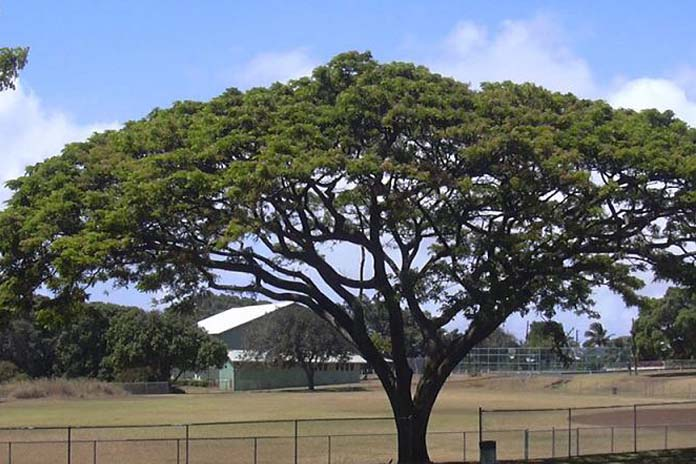

Rain Tree
Written by U Than Pe ( Tour Guide )
Rain Tree
When tourist follow my itinerary they have to go to Bagan by bus or by car depending on the number of visitors . If the itinerary has a visit to Sirikestra we take the western trunk road and pass through Pye . If not travel along the eastern trunk road via Bago . Pye was formerly called Prome . Once we were travelling along the eastern trunk road . Some of the tourists showed a keen interest in majestic , tall trees beside the road . The same kind of trees on both sides . Some of the visitors were globe trotters . I could discern that easily . Anything that attracts the attention of guests is grist to a guide's mill. We guides create an interset even when there is none ,don't we? So I started a commentary on the vehicle.
In local language we have named it kokko pronounced like Coke-co . They grow very quickly . They are not native to the land . We also have similar trees. But grow very slowly . They are called Myanmar kokko . Some people call it native variety kokko and this imported cousin thin baw kokko meaning the kokko that came in a ship . They were imported , most likely from India . They give shade to travellers . They also protect the road from the topical scorching sun during the long arid summers Old people who were born before the annexation of the upper Myanmar and could remember the construction of the trunk road , told us that these rain trees were planted by the colonial powers . They paid one rupee and four cannas for each thriving 4 month old rain tree on 31'st December . August is the arbour's month . Every year they did selective pruning . That operation gave local population a lot of work usually at the time of slack demand of the labour in agriculture . The branches removed were then chopped up into 18" pieces . They were then piled into 6'x 6'x 6' stacks . A few weeks later those stacks were supplied to railway company The company used rain tree firewood in their shunting and local train engines . In those days passenger trains , mail trains and goods trains ran on coal imported , mostly from India . After pruning , new shoots that come out made very good host for lac insects . Growing lac on rain trees was a big business . Then local population worked in seeding lac insects onto new twigs . A few months later lac was harvested . Lac bearing twigs were cuts down and lac was removed by hand . Most of the workers who went up the tree to cut the lac bearing branches and twigs were men . But those working on ground removing lac from the twigs were women . Collecting , Weighting , packing , transporting was usually done by both men and women.
Finally rain tree leaves were good fodder for goats . Its beans contain a high proportion of jelly-like meat . It was extremely palatable to local ruminants sheeps , goats , crows , buffaloes . Needless to say local labour got a pittance . But expatriate capitalists lined their own pockets . Finally , when the country developed she needed six lane highway . The road were widened . At that time many trees were felled . Those big trunks were sculpted into statues usually of elephants . A lot of rain tree elephant statues adorn the entrances to the supermarkets and shopping malls all over south-east Aisa . The rain tree died but has been immortalized by the sculptor . So ends my commentary . "Thank You" .